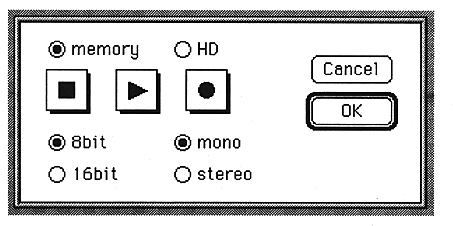

-
Select GetSound from the SCSP menu.
A window for capturing audio appears.

-
Short voice is enough for this time, so select memory.
-
After selecting 8bit, 16bit and mono, stereo, press the record button (black circle button).
Voice recording starts from the point you press it.
Press the stop button (black square button) to stop recording.
Press the OK button to return to the waveform editing window. At this time, the sound captured earlier is displayed as a waveform.
-
● Edit waveform
- Let's add a loop to this waveform. Two loop bars appear where the waveform appears. Drag this to move it. The point of the loop displayed numerically should change accordingly. The waveform display near the middle loop should also change. Next, let's move the loop editing slider. The loop bar and numerical display for waveform editing should change accordingly. Then click on the numerical display and change the numerical value. . . You understand already.
Besides this, you can cut and copy the waveform, mix each filter, and mix with other waveforms, which will be explained in detail.